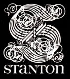
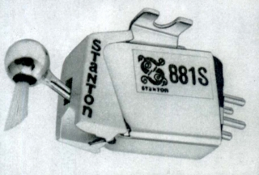
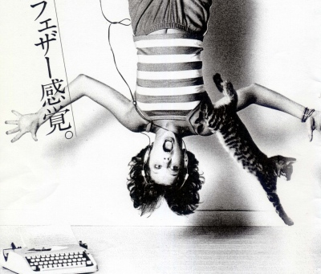
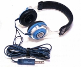
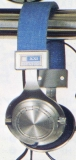
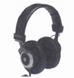

STANTON ( スタントン）
アメリカのオーディオメーカー。「ピカリング」と密接な関係にあった、カードリッジ等のブランド。ただし近年はＤＪ関連機器にやや特化しているおり、母体企業も転々としているようだ。

（「ピカリング」とともに独特のダスト・ブラシを持つスタントン・カードリッジ 881S)
ヘッドフォンについても、かつては通常の観賞用の製品が輸入されていたが、1990年代後半以降の製品は、ＤＪ用に特化している。
�T.1970年代の製品:代理店＝パイオニアエンタープライズ
ブルーを基調にしたデザインのモデル

(当時の広告写真） 
�U.1990年代の製品:代理店＝東志
1990年代にはすっかりＤＪ用のブランドとなっていた。
